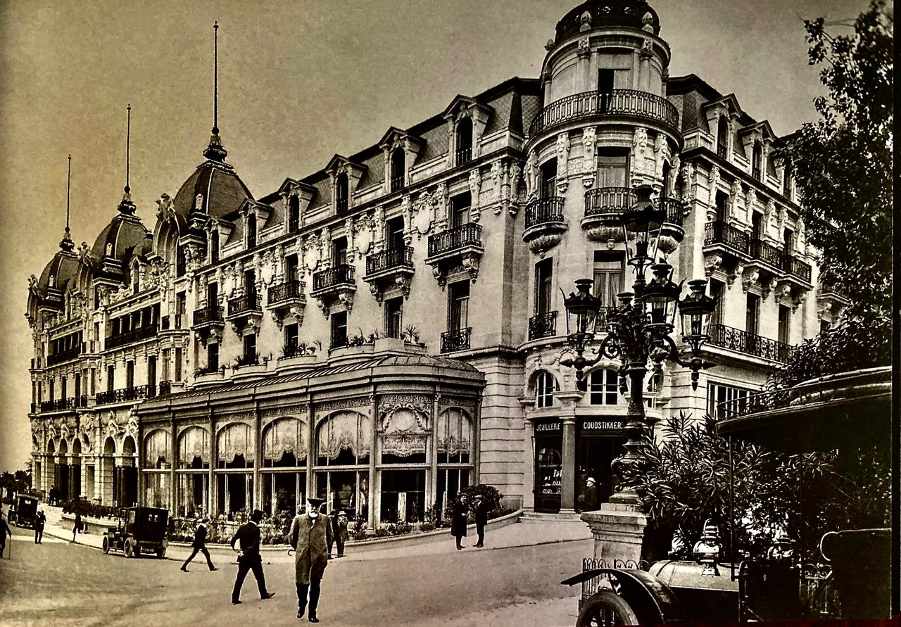
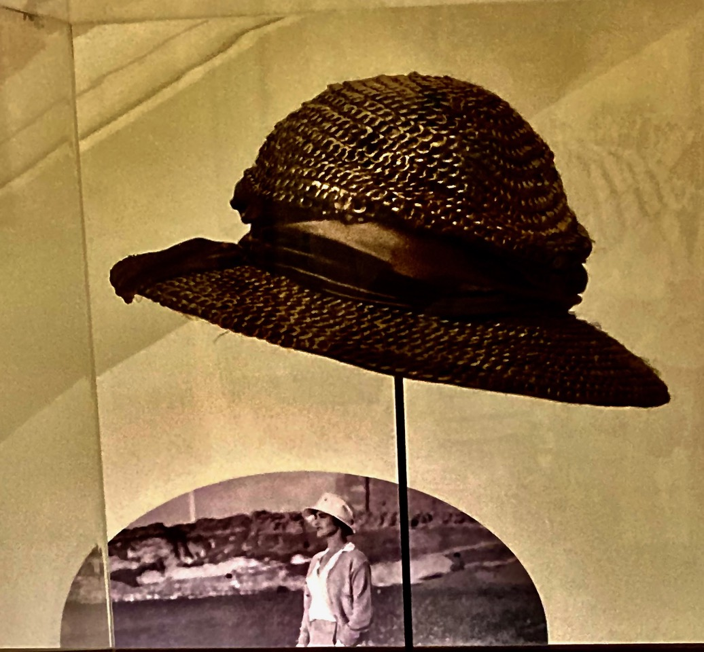
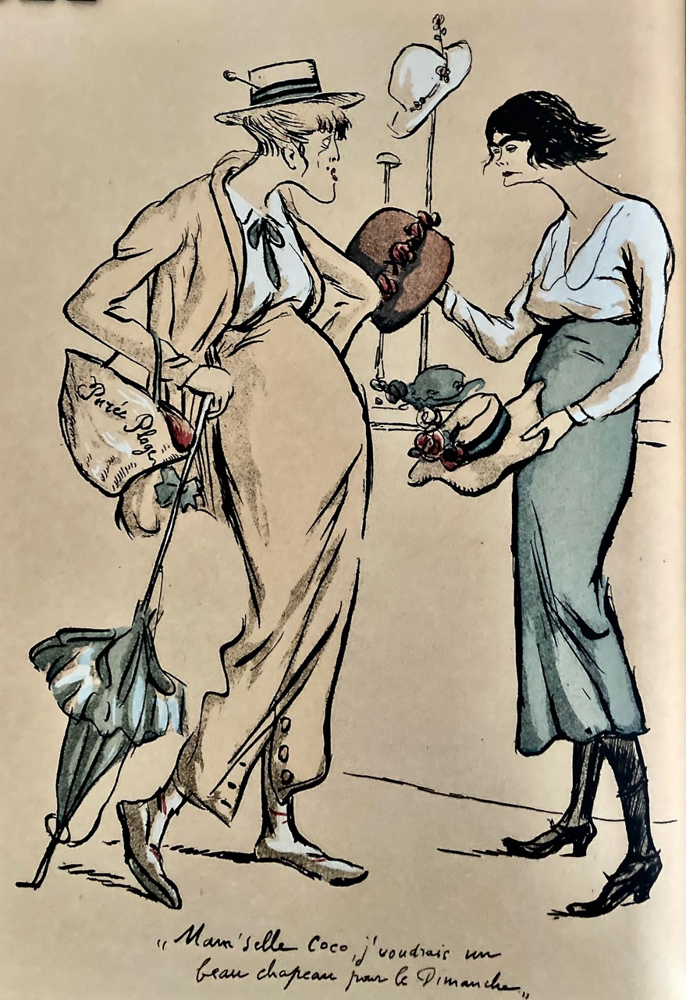
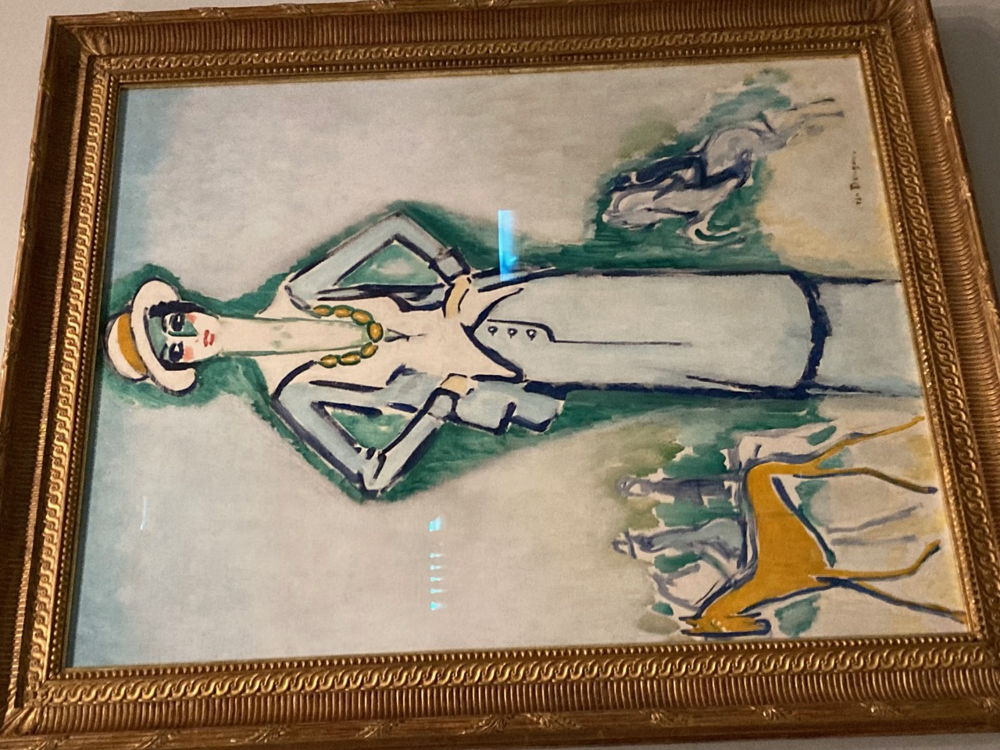
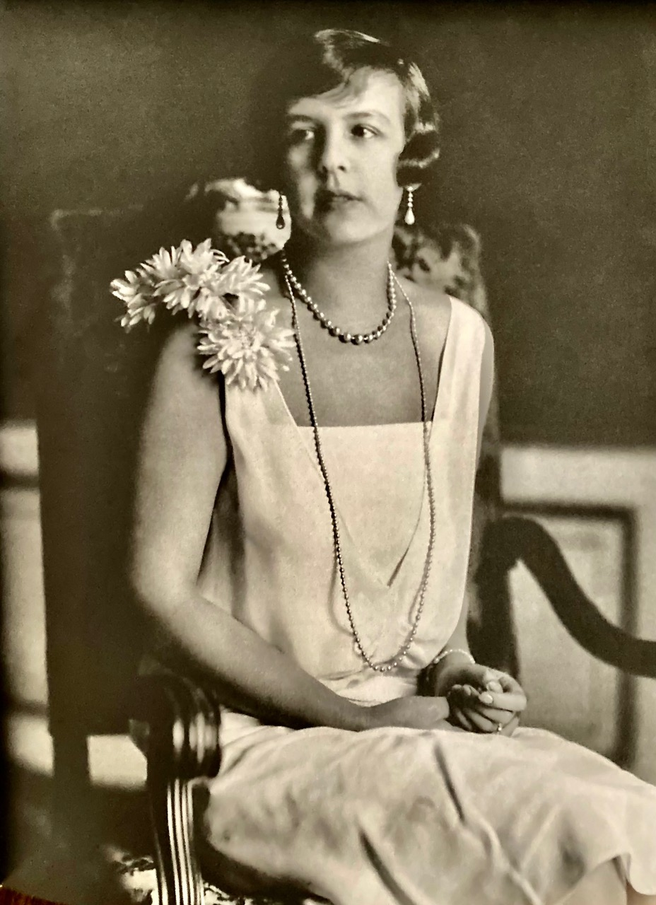
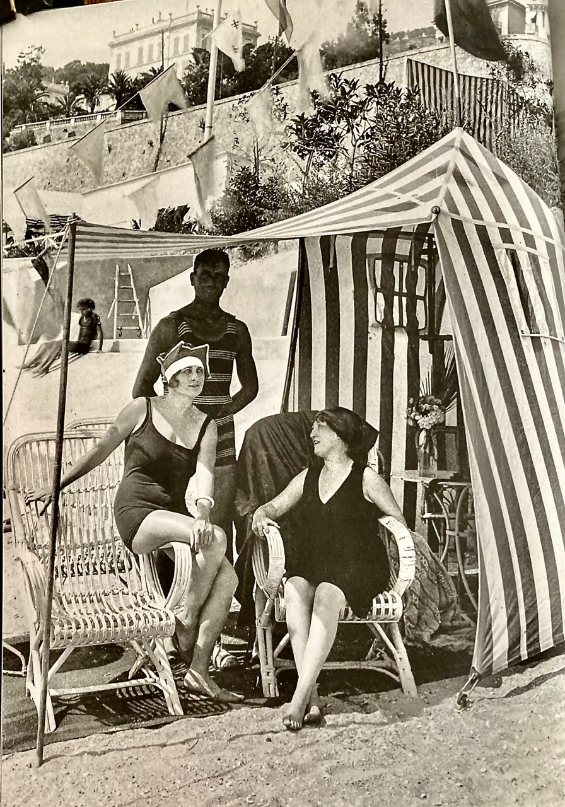
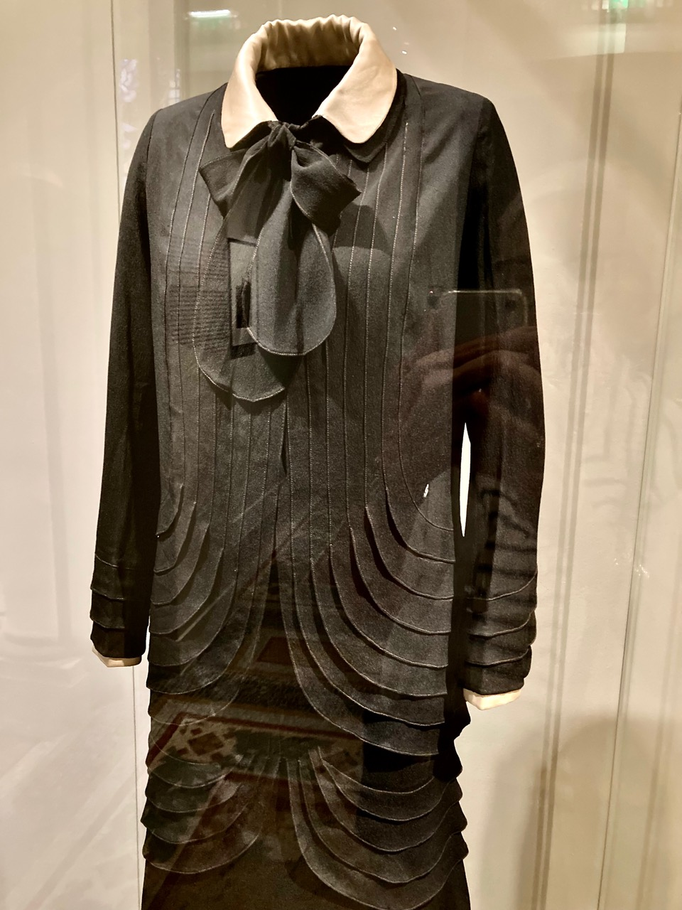
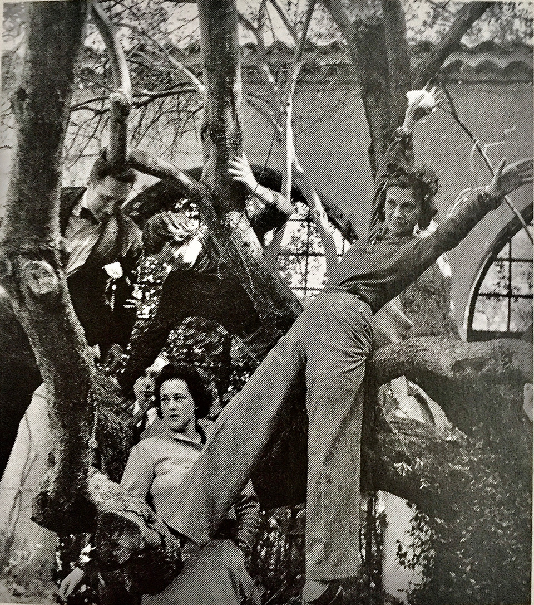

“The exhibition, Les Années folles de Coco Chanel, revolved around three main themes: outdoor life and the growing popularity of seaside leisure; the Ballets Russes and the influence of Slavic cultures; the invention of the Riviera style,” NMNM. The Chanel heritage teams, under the direction of Odile Premél, along with the NMNM (Nouveau Musée National de Monaco) curator, dove into the company archives and chose “rare models, some of which have never been seen before,” and were then complemented with items from public and private collections. The newly restored villa La Pausa, Chanel’s house on the Riviera, was about to be reopened so the NMNM thought it was appropriate the subject of the exhibit should be Chanel and the Riviera, with a focus on the 1920s. Displaying the outfits presented a challenge: “For Chanel ignored the standard practice of design drawings: as a natural extension of her work as a milliner, she cut the fabrics and fitted them directly onto the models’ bodies.”

Coco Chanel was well on her way to making the Chanel maison the phenomenal success it would become before the Roaring Twenties. Ladies flocked to her “hat shop” on 21, rue Cambon, Paris that opened in 1910, her first boutique opened in Deauville, 1912, offering sportswear in jersey, “liberating the female body” that was an immediate success. Her second boutique opened in the Hôtel Hermitage in 1914, where she sold “coats, furs, knitwear, blouses, petticoats, lace, lingerie, parasols, bags and fans.” In 1915, her first couture house opened in Biarritz, sixty seamstresses were employed. In these three, much celebrated French seaside resorts, Chanel offered wardrobe choices to the high-society ladies that were suitable for their growing participation in outdoor sports, such as golf, tennis, swimming, and leisure ware. “‘The Roaring Twenties’ witnessed meteoric growth for the Chanel brand. By the end of the Great War, Chanel had laid the foundation for her empire in the most prestigious coastal resorts.”

She reimagined jersey, fabric that was used for men’s underwear. Chanel, proud and spirited, did not conform to the bourgeois dress code. She disliked the opulence of women’s fashions in the 1900s. As we know, she was known to appropriate men’s clothes. This boyish look was worked into her comfortable sports style. “One world was coming to an end and another was about to begin. I was there; there was an opportunity and I took it…Simplicity, comfort, and clean-lines were required: I offered all of this, instinctively.” Unable to find any commercially available styles to suit her slim figure, she soon began designing outfits for herself. “I used what I saw as my flaws at the time to create a new style, and it worked. It might not have worked, and that’s just down to luck…I wouldn’t do it again if I wasn’t sure of starting a revolution.”

Chanel was a keen sportswoman. She well understood the needs of her customers…creating outfits for golf, swimming, equestrian sport, skiing, tennis, hunting, and fishing. “I invented the sports outfit for myself; not because other women played sports, but because I did. I didn’t go out because I needed to design clothes, I designed clothes precisely because I went out, because I have lived the life of the century, and was the first to do so,” Chanel. Others wanted the same freedom of movement, naturalness, and comfort.

The artist, Kees Van Dongen, a frequent visitor to Deauville resort, was inspired by the silhouette and allure of Chanel. He once confided to the British painter, Francis Rose, “I am only able to paint women in Chanel dresses.” (American Vogue, December 1, 1969).

Chanel No. 5 perfume, introduced in 1921, became “the” fragrance during the Roaring 20s…the bottle itself is iconic. The Little Black Dress, that Vogue called Chanel’s “Model T,” was introduced in 1926. Vogue declared in 1924 that Chanel’s new style was synonymous with “eternal youth.” She changed the appearance of the woman’s body through her clothes, but also through posture, accessories, perfume, and beauty care. “Today, she is seen as a pioneer of self-care, boosting women’s sense of determination and self-confidence.” The jewelry she wore was sometimes very real and dear and other times not. “I’m always happy to be covered in jewelry because, on me, it always looks fake.”

As part of her desire to promote a healthy lifestyle and wellbeing, in 1928 she created a line of beauty products, “for use before, during and after sports; creams and powders to combat wind and sunburn, protect against chapping, and prevent freckles.”
“By being her own model, by becoming one with her own creations, Gabrielle Chanel set an example for all women. Her success stemmed from the coherence between her creations—as historic opportunities for self-transformation and self-affirmation—and her dynamic beauty, captured in numerous portraits from the start…conveyed and revealed her art de vivre, forever imbued with style and freedom.”

Coco Chanel loved La Côte d’Azur…so aptly named by the poet, Stéphen Liégeard, for the title of a guidebook he wrote during the belle époque. She wanted a place to call her own, to be in the place she adored…for just awhile, now and then, a place away from her busy life, and to take the scissors, hanging from a ribbon, from around her neck. La Pausa became her refuge dans le beau monde de la Côte d’Azur, the center of her summer life, part of the Côte d’Azur’s high society. She was instrumental in making it a lifestyle…the playground for the rich and famous, the place to be.
Chanel first saw the property, where she would build La Pausa, while sailing the Mediterranean with Westminster on his yacht, the Flying Cloud, December 1927. The property was 180 meters above the sea in the small village of Roquebrune-Cap-Martin in the exclusive neighborhood of La Toracca. It overlooks Menton with sweeping views of the bay—the Italian border to the east and Monaco and its bay to the west with the Alps Maritime behind the property. Originally, there were three existing buildings on the property that were transformed into the main house with two small cottages for guests. It was less formal than other houses in the South of France. The exhibit catalog ended with pictures of Chanel at La Pausa. It was her residence from 1929–1953.

At the end of the exhibit, the evening ware was displayed. Dresses adorned with fringes, sequins, beads, tulle flounces…so elaborate, so beautiful. There were silk fans too. Chanel’s high-society clients wanted the dazzle, the originality Chanel offered. She gave them that. Seeing those dresses was a visual feast and took my imagination directly to the dance floor!
“By being her own model, by becoming one with her own creations, Gabrielle Chanel set an example for all women.”
À bientôt
Sources and picture credits: The catalog of the exhibit, Coco Chanel’s Roaring Twenties, published by Hatje Cantz and NMNM; iPhone photographs of the exhibit; text and photos from previous articles about Coco Chanel for Classic Chicago Magazine.